Many spins packed into a solid make a sensitive sensor, and the same spins disturb one another, so their coherence is short. That coupling, plus a slightly different local field at each spin, erases a spin qubit or memory within a fraction of a millisecond. A timed train of pulses can cancel these effects. A memory needs all of them cancelled together, and our score asks for exactly that. The classic sequences were designed by hand. We built a search that designs such sequences, ran it 18 times, and tested what it found against the standard ones in simulation. Three sequences we assembled from pieces it found beat every standard sequence in those tests. The search runs below.
- 18search runs
- 69 billionpossible sequences
- 300 thousandsequences tried per run
- 7spins in the final test
1The problem
Three things disturb the spins of a solid in a strong magnetic field: their magnetic dipolar coupling, a local field that differs slightly from site to site (the chemical shift, whose spread we call disorder), and a drive never exactly on resonance (the offset). A well-chosen train of 90-degree pulses averages them away over one cycle. WAHUHA did this first for the coupling, MREV8 made it robust, and CORY48 cancels all three. Real pulses are imperfect: they take time (the spins keep evolving during the 1 microsecond pulse), the turn is off by a small fraction (rotation error), and each starts and ends with a small turn about the wrong axis (phase transient). A useful sequence must tolerate all of this at weak and at strong coupling, so we test both.
Illustration
The illustration appears here once the page has loaded.
We turned the design into a search over cycles of 12 blocks from an alphabet of 8, about 69 billion sequences (SED in the figures). Each block is two 90-degree pulses, each followed by a short free interval, then a longer wait; it fills three windows of 3 microseconds, and a cycle lasts about a tenth of a millisecond. A cycle is scored by how faithfully it returns the spins to where they started, averaged over five random spin systems. The reward is minus the base-10 logarithm of the infidelity, so 4 means an error of one part in ten thousand. Each point higher means ten times less error. The search scores on 3 spins, which is cheap; every nominated sequence is re-scored on 7 spins with control errors, and the best are ranked with disorder added.
One of the 8 blocks: a pulse about x, a pulse about y, then a wait.
2The physics
A spin-1/2 in a strong magnetic field along z precesses about it at the Larmor frequency . In a solid each spin also feels the magnetic dipole of every other spin, and a slightly different field of its own, the chemical shift. At high field only the part of the dipole coupling that commutes with the precession survives, the secular part, and the internal Hamiltonian of N spins is
where is the spin operator of spin i, its shift, and the coupling falls as the inverse cube of the distance between the two spins and vanishes when the line joining them makes the magic angle with the field. This Hamiltonian is what puts the spins out of step: each precesses at its own rate, and the coupling mixes every pair, so a state prepared across the spins loses its coherence.
The pulses are a transverse field oscillating near . In the frame rotating at the pulse frequency the fast precession drops out, the Zeeman term leaves only the offset between the pulse frequency and , and a pulse is a steady field along x or y that turns every spin at once:
The simulator writes the same Hamiltonian with Pauli matrices , draws the coefficients at random around the stated values instead of placing spins in space, and draws the offset once per ensemble member:
with , and . The disorder, coupling and offset values quoted on this page are these coefficients, in the simulator's scaled units: one unit of coupling is 4 rad/s, which is 2/π Hz or 0.637 Hz, and one unit of disorder or offset is 2 rad/s, which is 1/π Hz or 0.318 Hz. The frequency axes of the figures are in Hz.
A 90-degree pulse about the axis a is a finite rotation. The spins' own Hamiltonian keeps acting during it, a rotation error makes the turn slightly too large, and a phase transient adds a small turn about the other transverse axis at each end:
where is the collective spin along the pulse axis, the collective spin along the other transverse axis and the pulse width. Between pulses the spins evolve freely under . A block is two such pulses, each followed by a free interval, then a free window, as in the sketch above.
A cycle of blocks multiplies to one propagator U. Its score is the average gate fidelity to the identity on N spins, ,
with the mean over the ensemble members. A cycle with U = 1 for every member returns any state of the spins to where it started, whatever the couplings and shifts, which is the whole task of a memory. The search looks for the sequence with the largest R among the , on 3 spins without errors while searching and on 7 spins with the errors afterwards (settings in the Notes). The pulses manage this the way the illustration shows: each turn changes the axis along which the spins see every term of , and over a cycle that sends the field along the six directions the terms average away, up to what the finite pulses and the next order of the average leave behind.
3A live search
Press Start and the search builds a twelve-block sequence in your browser with the 3-spin physics we trained on. The network was trained beforehand and stays fixed while the search runs.
Live search
The live search appears here once the page has loaded.
4The reinforcement-learning search
Search and network
Designing a sequence can be played as a game with one player. Starting from an empty sequence, the player plays actions, appending one block at a time, until the cycle is complete (one rollout); the spin simulator then scores the result. Reinforcement learning has designed such sequences before; that search produced the reference YXX24. We adapted AlphaZero. Each decision builds a tree rooted at the current partial sequence and runs 500 simulations of possible continuations, guided by a small network whose policy head gives a prior over the next block and whose value head predicts the final reward; the next block is drawn from the visit counts, sharpened by a temperature. The score and the visit counts of every finished rollout become the network's training records (Figure 2). One trainer updates the network while seven collectors play rollouts in parallel, with no constraint on their relative speed.
Action spaces and reward
Each action is one of 8 blocks, and each block refocuses the dipolar coupling on its own, so the search counts block choices in place of single pulses. We used two action spaces: SED, with 12 two-pulse blocks to a cycle as in Section 1, and YXX, with 8 three-pulse blocks (Y X X with the sign of each pulse chosen freely, the blocks of YXX24). The reward is the one of Section 2, averaged over the collector's five random 3-spin systems with no disorder and no control errors. The training simulator's integration is not exactly unitary, so it clips each fidelity to one; a clipped mean of one is stored as 15, the cap seen in Figure 3 (the reward adds 10−15 to the infidelity before the logarithm). We call these records the stored reward, to set them apart from the exact re-scoring below. Comparisons between the two action spaces use 72 windows: two SED cycles or three YXX cycles.
Symmetry families
Two operations leave a sequence's score unchanged for every spin system and every control error: moving the first block to the end, and turning all the pulse axes together about the field by a quarter turn for SED or a half turn for YXX. Together they generate up to 48 images of an SED sequence and 16 of a YXX sequence, and we call this set a family. All members score the same, and one member, its representative, stands for the family wherever one is drawn or counted. Under training conditions a reflection and a time reversal would extend a family further; we leave them out because each fails once disorder or offsets are present, and the reflection also under phase transients. The network sees family members as different inputs, and Section 5 asks how far it learned their equivalence.
Training runs
We ran the loop 18 times, crossing the two action spaces with four values of the exploration coefficient cinit (4, 9.5, 15 or 20.5), the weight of the search's exploration term, which favours rarely visited branches, and two temperature schedules (fixed, or annealed in two steps over the second half). Every other setting was the same, and the pair of SED runs at 20.5 was repeated once. Each run made about 300 thousand rollouts while the trainer took 100 thousand steps. The runs' names give the action space, the coefficient and the schedule; the figures below label them that way.
Trainer and collector pacing
The trainer and the collectors ran at their own pace, linked only by the records and the shared weights. Three rollouts per trainer step were meant to align their finishing times, and they did not do so exactly in any run: a larger cinit spreads the simulations over more branches, so fewer of them hit the simulator's cache and collection slows. On SED at cinit = 4 the trainer finished past the midpoint of collection; from 9.5 up the trainer finished before the collectors reached the first temperature step, so most of those runs' sequences came from a network that no longer changed; on YXX, whose shorter sequences concentrate sooner and reuse the cache more, learning ran to or past the first temperature step at 4, 9.5 and 15.
Figure 3: the best reward over one run
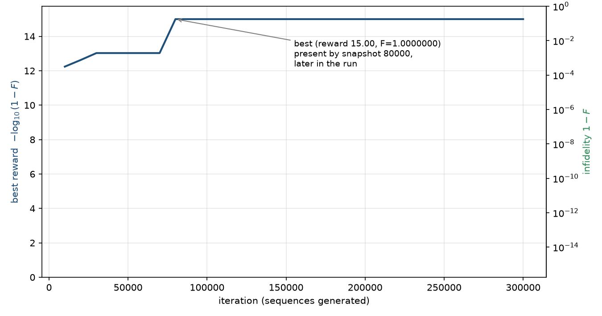
Evaluation conventions
After training, every sequence we report is re-scored by an exact evaluator, which builds each propagator by eigendecomposition and resolves infidelities far below the integration error of the training simulator. Each sequence evaluation uses an ensemble of 20 random 7-spin systems drawn from one seed, which we call a bank. There are five such banks: the training physics without errors (the ideal bank); the training coupling with no disorder and all three control errors; the ranking bank, with disorder 100 (units of 1/π Hz), coupling 3000 (units of 2/π Hz) and all errors, whose disorder, coupling and errors the live search offers as its second setting; disorder alone (1000, units of 1/π Hz, with no coupling and no errors); and a harsher bank with disorder 3000 (units of 1/π Hz), coupling 4000 (units of 2/π Hz) and all errors. Sequences of different length are compared over 72 windows of 3 microseconds: two 24-pulse SED cycles, three YXX cycles or one 48-pulse cycle. The full settings are in the Notes.
5Search behaviour and what the networks learned
We looked at three things in the runs: the balance between exploration and exploitation, the fidelity of what the search found, and what the networks learned; their pace is in Section 4.
Exploration versus exploitation
The SED runs change character between cinit = 9.5 and 15. Of 300 thousand rollouts, distinct sequences make up about 4 to 5 percent at 4, 17 to 19 percent at 9.5, and at least 80 percent from 15 up, while the most visited sequence falls from 60 to 240 thousand visits to under a thousand (Figure 4). Every YXX run stays concentrated, its most visited sequence collecting at least about 9 thousand visits: eight decisions per rollout in place of twelve compress the tree, so each search concentrates sooner and its visit-count targets reinforce that concentration through training. Annealing the temperature sharpens whatever imbalance is already there: at the two lower coefficients discovery stops at the first temperature step, while from 15 up each step raises the reward of new sequences with almost no repeat visits.
Figure 4: discovery histories of three runs
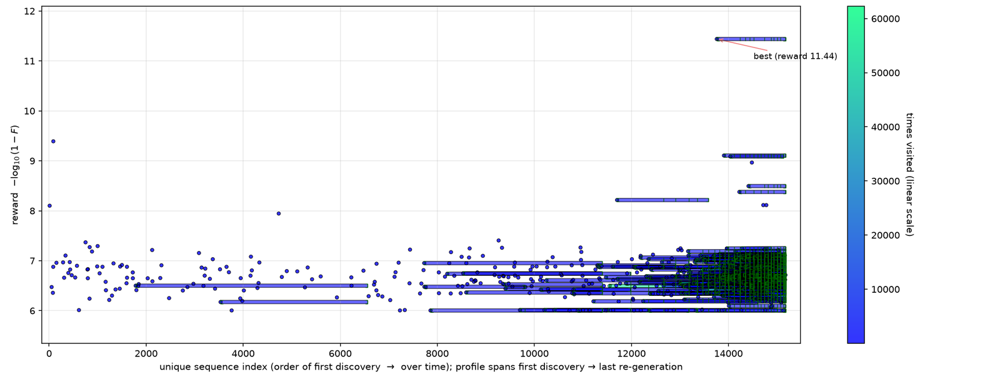
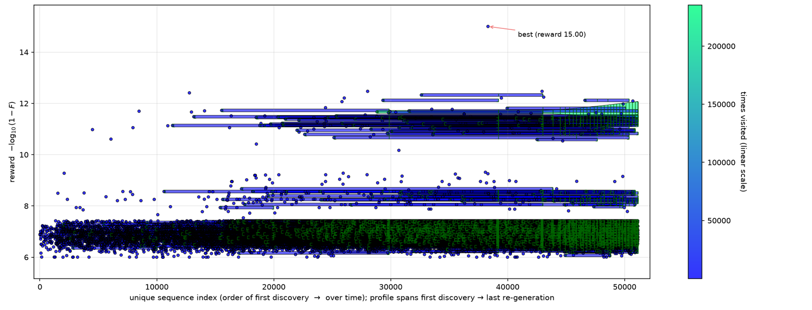
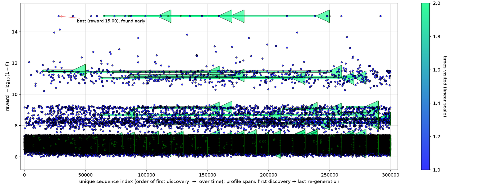
Fidelity of what the search found
Scored exactly on the ideal bank for one cycle, the best family of each SED run lies near 8.5 to 8.8 (one annealed run at 6.9) and the best of each YXX run near 6.9. The stored SED maxima reach the cap of 15 from cinit = 9.5 up, so the stored reward cannot tell the best families apart; the ranking of Section 6 does. The runs also visited the references SED24 and SED24Err (earlier sequences from our group), YXX24 and both FunSearch sequences (Section 8), usually once or twice; one run visited YXX24 fifteen times.
To see why a search is needed, we scored three thousand random SED sequences, mutants (copies with one or more blocks changed at random) of the best and most-visited sequences, and the families the runs nominated (Section 6) (Figure 5). Most random sequences do not close (their pulses leave a net rotation) and score near zero. Above an empty band, the closed sequences spread over a plateau near 3. Most nominated SED families cluster between about 8.1 and 8.7, where no random sequence or mutant appears; the rest lie between about 5 and 7. A random YXX sequence closes more often than a random SED one, one in four against one in twelve, which fits the easier, more concentrated YXX searches above.
Good sequences are isolated. One changed block drops every sampled SED mutant of a top sequence, and most YXX mutants, to the bottom, and two or more changes rarely clear the plateau (Figure 6).
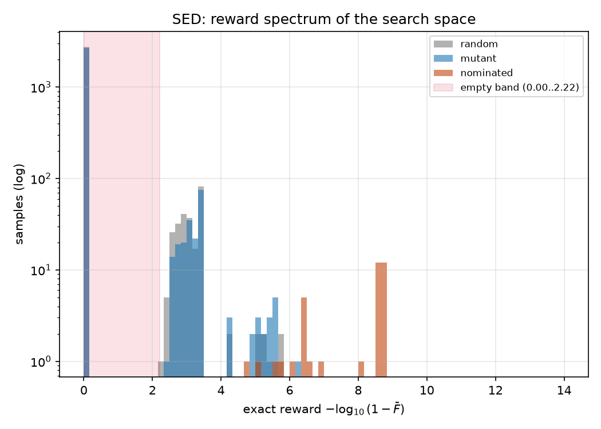
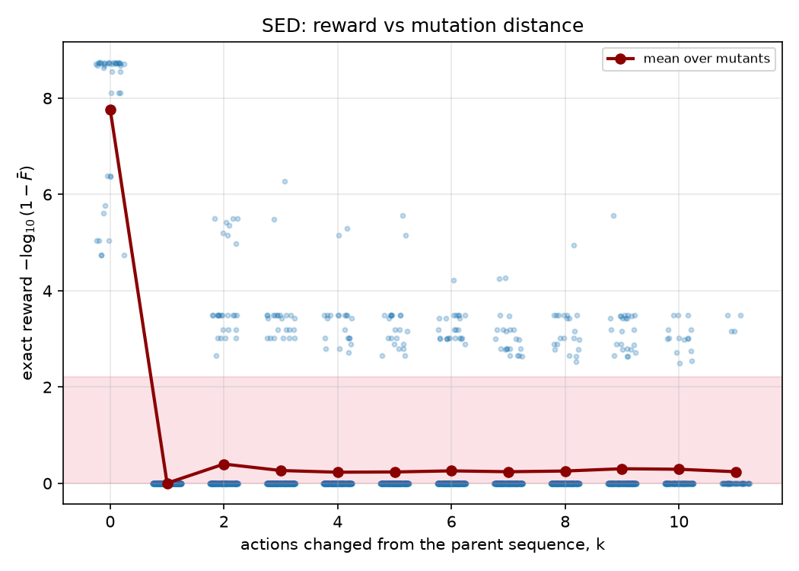
What the networks learned
We asked five things of each run's network: whether it fits its targets (fit), whether it tells good prefixes from bad ones (recognition), whether it writes good sequences on its own (generation), whether it respects the symmetries of Section 4 (invariance), and whether it helps the search it guides (usefulness). Figures 7 and 8 follow one statistic per question and head over training, and Figure 9 shows the usefulness test.
Fit. Every policy loss falls below that of a uniform policy and every value loss falls to about a quarter of its start or less. On SED from cinit = 15 up the policy loss stays close to uniform; the smallest losses belong to the two runs at 4, whose sampling concentrated most.
Recognition. On a test set of played sequences, the policy's top action is a best last block (one of the eight endings with the highest exact reward) about 27 to 36 percent of the time on SED from cinit = 15 up and 37 to 46 percent on YXX from 15 up, against one in eight by chance; the concentrated runs at 4 sit near chance. The value head's rank correlation with the reward the final network's own search reaches from the same prefix is about 0.2 to 0.4 on SED from 9.5 up, below 0.1 at 4, and 0.6 to 0.8 on YXX at 15 and 20.5.
Generation. Sampled from the policy alone, SED sequences score about 6 at cinit = 4 and up to 4.5 at 9.5, and every other SED policy scores within half a unit of uniform sampling at 0.4; every YXX policy scores about 7 to 9.6 against 1.1.
Invariance. No network learned the turn about the field exactly. The SED policies change under it about as much as under a relabelling that is no symmetry, the YXX policies at 15 and 20.5 a little less, and the concentrated policies favour particular family members. The value heads keep more of it, changing less than that control by 5 to 25 percent on SED from cinit = 9.5 up and by about half on YXX from 15 up.
Usefulness. With the trained heads in place of the untrained ones, the search ends higher in all 32 paired searches at SED 4 and 9.5, by a median of about 2.5 to 9, and in at least 26 of 32 in every YXX run, by about 2.4 to 5.6; on SED from 15 up the gain is about 0 to 1.4 (Figure 9). The search gains most in the runs whose policy writes good sequences on its own.
Figures 7 and 8: network diagnostics over training
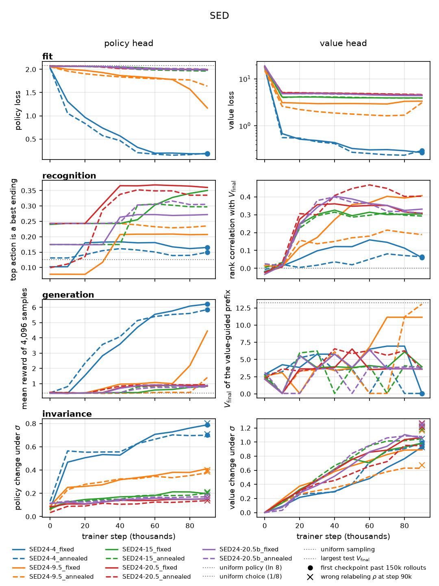
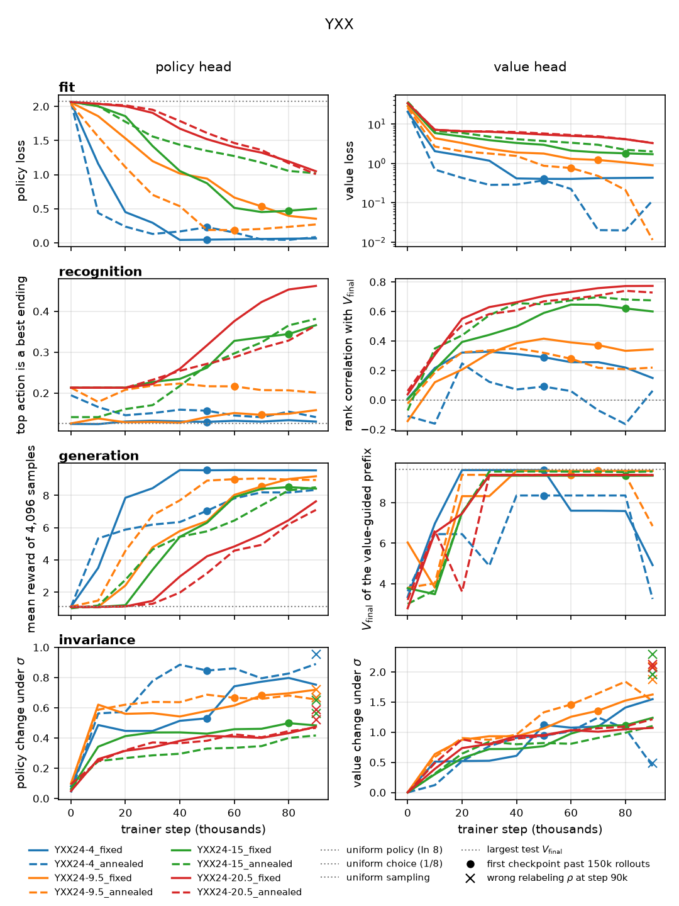
6Families found by the search
Catalogue selection
Re-scoring every sequence a run played would be too expensive, so we nominate first. From each of the 18 runs we took the eight families with the highest stored reward and the two most visited: at most 180 nominations, with families shared between runs counted once. We scored the pool on seven spins over 72 windows with all control errors and no disorder, kept the top 64, and added seven so that every run is represented by both kinds of nomination. That gives 71 ranked families, 56 SED and 15 YXX, each then scored for one cycle and for 72 windows on all five banks; the final rank uses the ranking bank. The seven references (SED24, SED24Err, SED48, CORY48, YXX24, FunSearch 1 and 2) were scored alongside them and receive no rank. The search optimised the ideal physics, so a family's rank says little about how well its run searched.
The families
The RL sequences in the figures are the three highest-ranked families of each action space: RL sequences 1 to 3 from SED, which take the first three catalogue positions, and 4 to 6 from YXX, which come after 44 SED families. Each of the first three cancels the disorder term in the limit of short pulses. FunSearch 1 and 2 (Section 8) score level with RL sequence 1 on the ranking bank. The two archive picks are families the runs recorded below the nomination threshold, which we selected by hand from the archives while checking the evaluator. The four hand-assembled sequences are 48-pulse cycles we constructed from pieces the runs stored. In A, B and C a 24-pulse family member is followed by a second member of the same family: its image under a shift and a quarter turn, under a half turn, and under a shift by three blocks. D repeats a 24-pulse sequence whose single cycle leaves a net half-turn, so that two cycles close. Their assembly was manual, so their performance cannot be credited to the search. Figure 10 dates each family's first appearance in its run.
Figure 10: first appearance in the runs
7Numerical evaluation of the sequences
The twelve sequences of Section 6 and the seven references were scored on the banks of Section 4 with 1 microsecond pulses and 3 microsecond windows, the training timing, over 72 windows.
Performance across regimes
On the ranking bank, RL sequence 1 is the only ranked family above SED48, by a few hundredths, and its separation from FunSearch 1 and 2 is a few thousandths. Hand-assembled A, B and C clear the best reference by about 1.5 units or more, and D by half a unit (Figure 11). On the harsher bank RL sequence 1 falls behind CORY48, SED48, SED24 and SED24Err, while archive pick 2 and all four hand-assembled sequences stay above every reference. With disorder alone the order changes again: YXX24 leads the references at about 14, the best YXX family reaches about 11, and hand-assembled C reaches the cap of 15 (not shown).
Sensitivity to one control error at a time
We swept each control error with the other two at zero, at the ranking bank's disorder and coupling. Under rotation error, hand-assembled A, B and C lead near zero, and B and C hold up best at large positive error; RL sequence 1 responds less than RL sequences 2 and 3; the three YXX families (RL sequences 4 to 6) fall off steeply beyond their small-error peak, YXX24 less so (Figure 12). The responses to phase transients are mostly flat, and under a common resonance offset hand-assembled A, B and C keep their lead over the references throughout (not shown).
Disorder-coupling maps
RL sequence 1's edge over the references holds only near the training and ranking conditions. Across a 20 by 20 grid of disorder and coupling with all three errors present, it gains on CORY48 at low disorder and intermediate coupling and loses over much of the range we mapped; hand-assembled A gains over most of it (Figure 13).
Repeated cycles and pulse spacing
The ranking-bank order of Figure 11 already holds at the earlier cycle ends before 216 microseconds (not shown). As the windows between pulses widen, with the pulses still 1 microsecond long, SED48 and some of the hand-assembled sequences keep more fidelity than RL sequence 1, and the YXX families degrade earlier (Figure 14). RL sequence 1's advantage over SED48 belongs to the training timing: with 2 microsecond pulses and 5 microsecond windows SED48 leads.
Figures 12 to 14: sweeps and maps
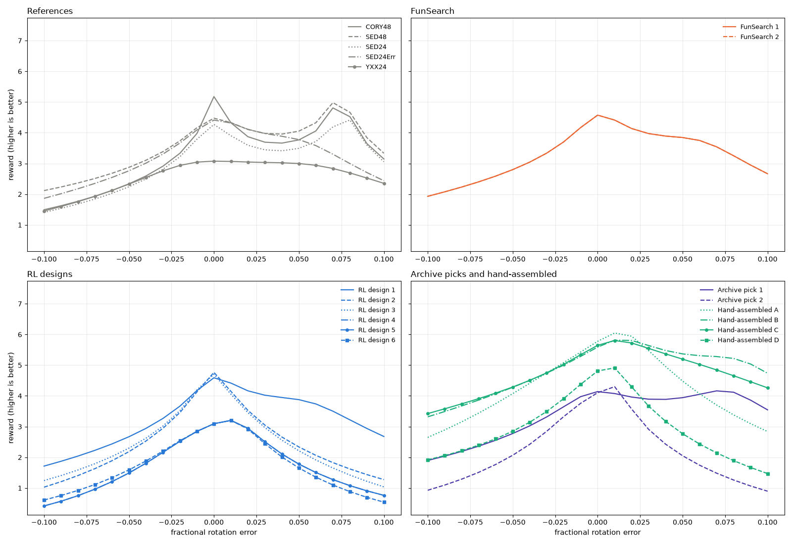
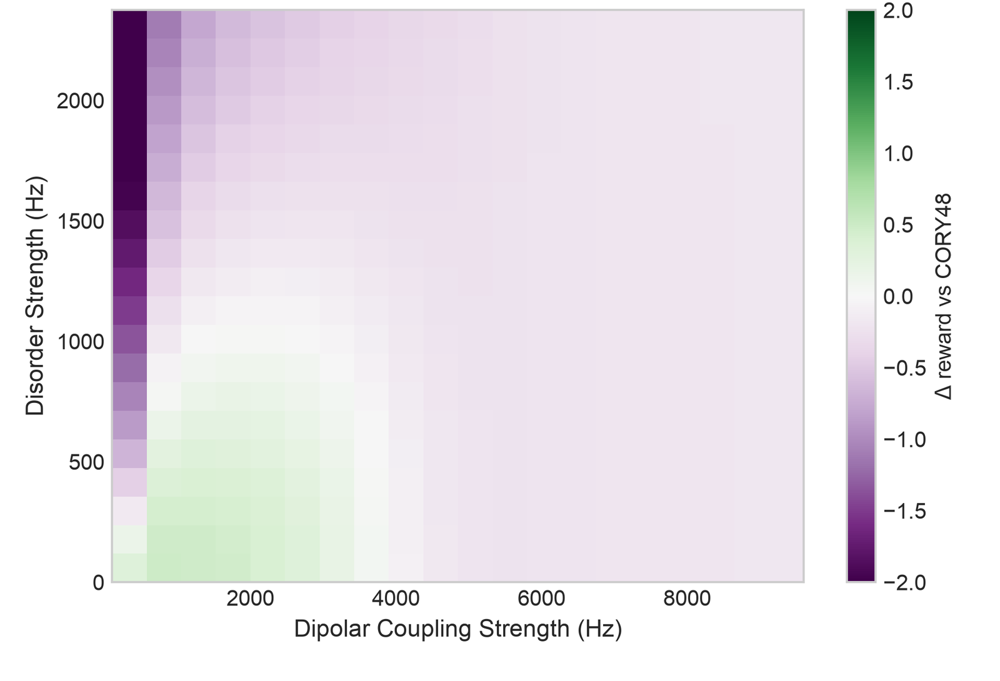
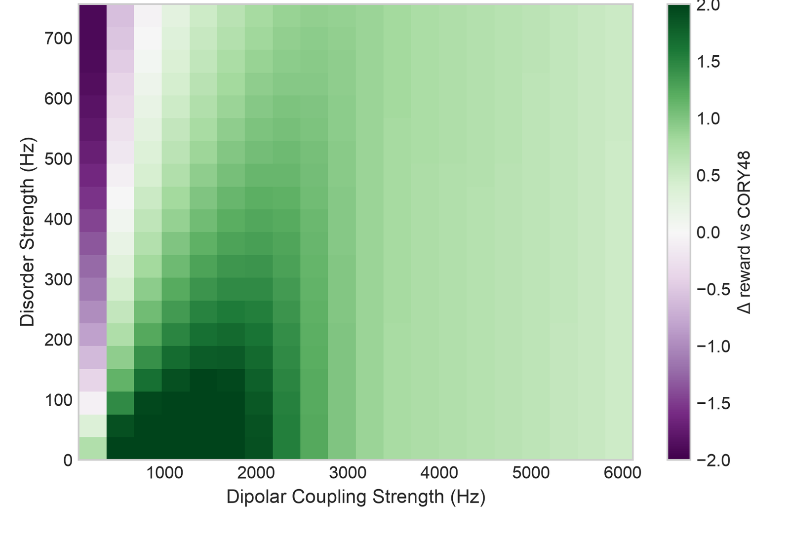
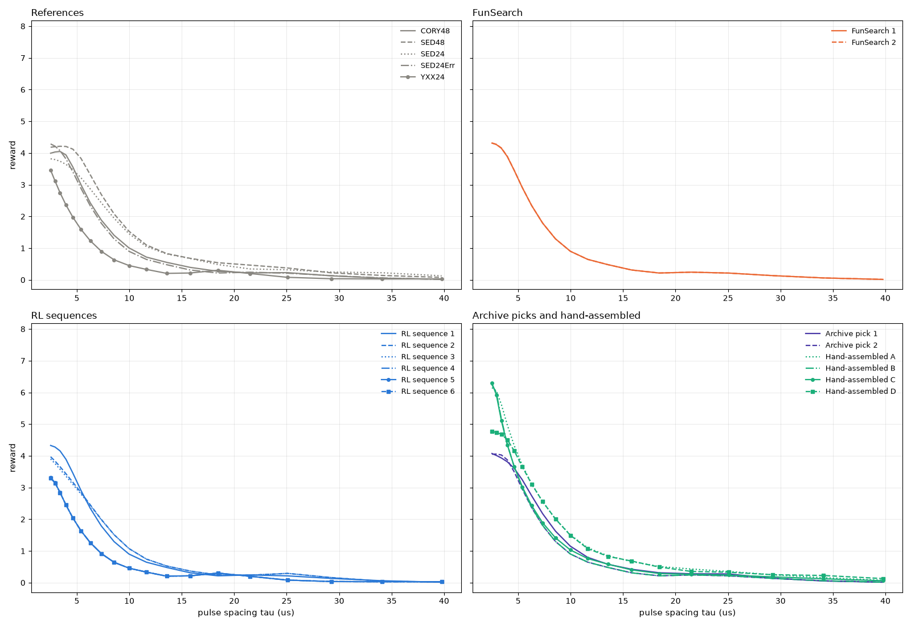
Limits of the predictions
These predictions come from a closed model of 7 spins with couplings between every pair, one ensemble rescaled into the five banks, and no readout, lattice geometry or environment.
8A second approach: FunSearch
The second approach, FunSearch, searches over programs. A language model writes a short program that generates a sequence, and a sandbox runs it on the spin simulator and scores the sequence. The best programs, with a short summary of which unwanted terms their sequences cancel, go back into the next prompt (Figure 15).
A first run of the loop on 3-spin systems produced FunSearch 1 and 2, its two best sequences.
Figure 16: a separate small run of the loop
9Remaining questions and next steps
- A search whose reward includes disorder and control errors, on more spins, so that the training objective matches the use. No run so far trained on them, so the robustness measured in Section 7 belongs to the sequences and was never optimised.
- A search over the full 72-window interval in place of a repeated 24-pulse cycle, which could suppress the residual errors that repetition accumulates.
- A symmetry-aware search that maps every prefix to one fixed image under the symmetries before the network sees it, merging equivalent branches of the tree. We held this back to see first whether the network would find the symmetries on its own.
- A FunSearch run under the same physics, evaluation and budget as the RL search, so the two approaches can be compared on one chart, and a whole run without learning at the same budget, extending the paired test of Figure 9 to a full run.
The score we rank by asks a sequence to cancel the spins' own interactions, the disorder and the offset on a simulated solid with imperfect pulses. For a spin qubit or memory, which has to hold any state unchanged, that is the whole task. For a sensor it is only the decoupling half: a sensor must also stay responsive to the field it measures, and our target treats that field as one more thing to cancel, so a sensing sequence needs a target of its own.
10Notes
Settings. Figures 11 to 14 use an exact evaluator on 7 spins, 20 ensemble members from one seed and 1 microsecond pulses, over 72 windows of 3 microseconds (Figure 14 varies the window length); Figures 5 and 6 use the same ensemble over one cycle at coupling 1000 (units of 2/π Hz) with no disorder or control errors. Training used 3 spins, 5 ensemble members, coupling 1000 (units of 2/π Hz), no disorder and no errors. The three banks of Figure 11, all with the three control errors, are coupling 1000 (units of 2/π Hz) without disorder; coupling 3000 (units of 2/π Hz) with disorder 100 (units of 1/π Hz), the ranking bank, whose disorder and coupling Figures 12 and 14 also use; and coupling 4000 (units of 2/π Hz) with disorder 3000 (units of 1/π Hz). The control errors are a rotation error of 1.5 percent, a phase transient of 1 percent of a quarter turn on each side of every pulse, and an offset drawn for each ensemble member with a spread of 10 (units of 1/π Hz). Couplings have the secular dipolar form between every pair, drawn around the stated value with a quarter of it as spread. The network diagnostics of Figures 7 to 9 use 3 spins at the training coupling with no disorder or errors, on 40 ensemble members for the test set and another 40 held out for Figure 9. The small FunSearch run in Figure 16 used 8-block cycles, one 3-spin system and 2 microsecond windows, and counted a failed program as a random sequence. The live search uses the network saved after 90 thousand trainer steps of one SED run at exploration coefficient 9.5 and fixed temperature; its second physics setting uses the ranking bank's disorder, coupling and errors on 3 spins. The disorder, coupling and offset values are the coefficients of the Pauli form in Section 2, in the scaled units given there. The simulator writes the internal terms with Pauli matrices and the controls with spin-1/2 operators.
Caveats. Our results here are not yet published. One run per setting (two for SED at cinit = 20.5) and no repeated seeds, so differences between settings are single observations. RL sequence 1's margins in Figure 11 are small and measured on one saved ensemble. Everything here is simulated, on 3 or 7 spins with random all-to-all couplings and no lattice geometry. The first FunSearch run used different physics from the RL search: coupling 4000 (units of 2/π Hz) and disorder 3500 (units of 1/π Hz).
References.
- J. S. Waugh, L. M. Huber and U. Haeberlen, Phys. Rev. Lett. 20, 180 (1968). doi:10.1103/PhysRevLett.20.180.
- P. Mansfield, J. Phys. C 4, 1444 (1971). doi:10.1088/0022-3719/4/11/020; W.-K. Rhim, D. D. Elleman and R. W. Vaughan, J. Chem. Phys. 59, 3740 (1973). doi:10.1063/1.1680545.
- D. G. Cory, J. B. Miller and A. N. Garroway, J. Magn. Reson. 90, 205 (1990). doi:10.1016/0022-2364(90)90380-R.
- Peng et al., Phys. Rev. Applied 18, 024033 (2022). doi:10.1103/PhysRevApplied.18.024033.
- Silver et al., Science 362, 1140 (2018). doi:10.1126/science.aar6404.
- Romera-Paredes et al., Nature 625, 468 (2024). doi:10.1038/s41586-023-06924-6.
SED24, SED24Err and SED48 are earlier sequences from our group.